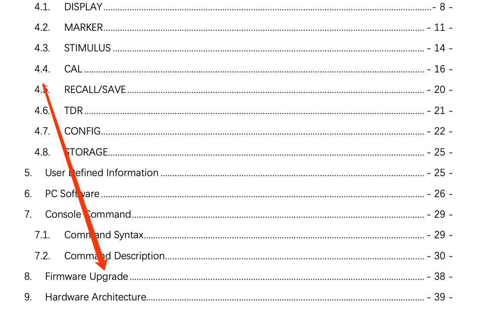
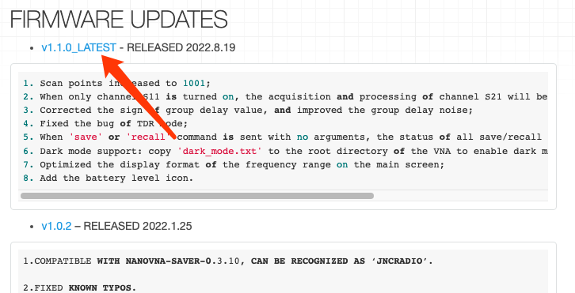
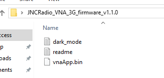
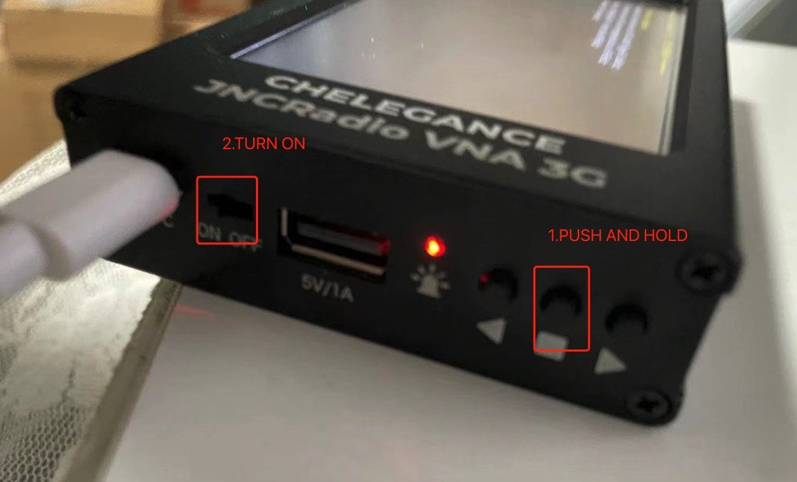
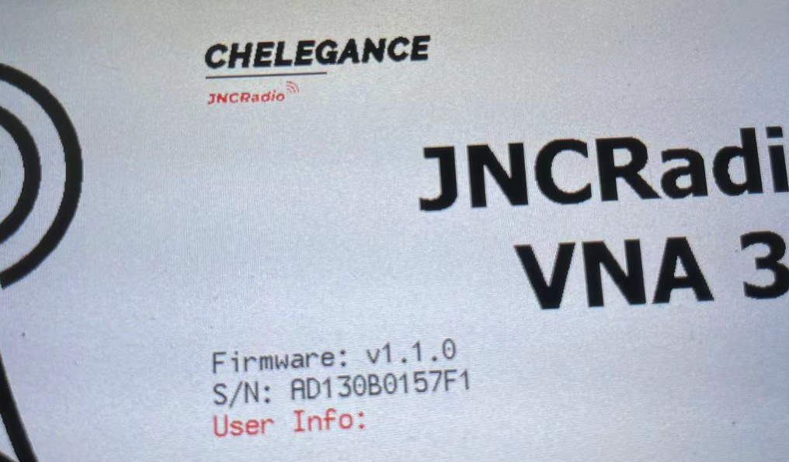

JNCRADIO VNA 3G UPGRADE FIRMWARE
- The firmware upgrade tutorial is well explained in the user manual section 8, as below -

- As the user manual says, what we need to do is to
Firmware upgrade:
1.Connect the device to PC with Type-C cable;
2.The device will be recognized as a U-Disk;
3.Copy ‘vnaApp.bin’ into the U-Disk;
4.Power off and on;
DOWNLOAD THE LATEST FIRMWARE
- Firmwares will be available from Chelegance wiki page, navigate to JNCRadio vna 3g product page and find the latest firmware available(up to date of this article is v1.1.0).

- Download and unzip it. It will be a folder with a .bin file in it.

UPGRADE Firmware
-
Connect the VNA to your computer with supplied type-c CABLE
-
Push and hold the middle push button, then power on JNCRadio VNA 3G. It will be recognized as a U-disk from your computer

-
Drag the .bin file to the root directory of the U-disk(replace if there's previous version)
-
Eject the VNA from your computer and restart your VNA.
-
Succeed!
